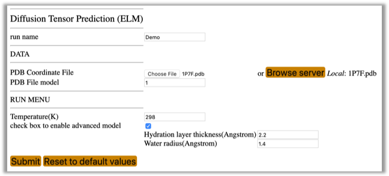
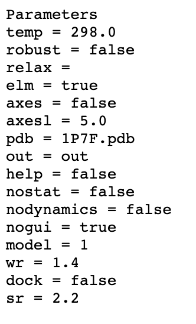

This module performs ab initio prediction of the rotational diffusion tensor of a macromolecule directly from the atom coordinates using an ellipsoid model (ELM) representation [6].
To select this module from the general ROTDIF-Web page (shown below), click the button “Diffusion Tensor Prediction”
The interface will look like this:
Run name: The name of the folder to store the results of the current session
PDB Coordinates File: Upload the coordinates file to be used for diffusion tensor prediction
PDB File model: If the coordinates file contains more than one structural model, please specify the model you want to analyze. The default model number is 1.
Temperature: The desired temperature (in K) of the aqueous medium. Please note that the program assumes that molecule of interest is tumbling in water, and the empirical formula for the water viscosity used here [6, 12] is valid in the range from 273K to 373 K.
check box to enable advanced model: These options are designed for advanced adjustment of the hydration layer thickness and the water radius. It is recommended that you use the default values.
Prior to running ELM, please make sure the project name is specified. If it is not specified or you would like to change the project name, click on the “head” icon in the top right corner. The following selection window will appear:
You can select an existing project from the pull-down list or click “New project” and create a new project by providing the project name and the description, for example:
Then click the button. The “Status” information will read like the following:
Now you can run Diffusion Tensor Prediction (ELM). Here is an example of input parameters; you can also try other values.

Fill out the required fields, shown above, then click the Submit button. After the process has completed, you should be able to see and download a file “ELM prediction” containing the output of the diffusion tensor prediction. The screen output looks like the following:
Output files accessible directly from the module GUI:
Download ELM prediction: ELM_prediction. This output file contains the predicted diffusion tensor. Below is a screenshot of that file.
Download ELM parameters: ELM_params. This output file contains a record of all input parameters and settings used in the calculation, and it looks like this:

Exercise
This exercise includes prediction of the rotational diffusion tensor for the B3 domain of protein G (GB3). Use atom coordinates file “1P7F.pdb” to run the ELM module.


 in the top right corner. The following selection window will appear:
in the top right corner. The following selection window will appear:

 button. The “Status” information will read like the following:
button. The “Status” information will read like the following: